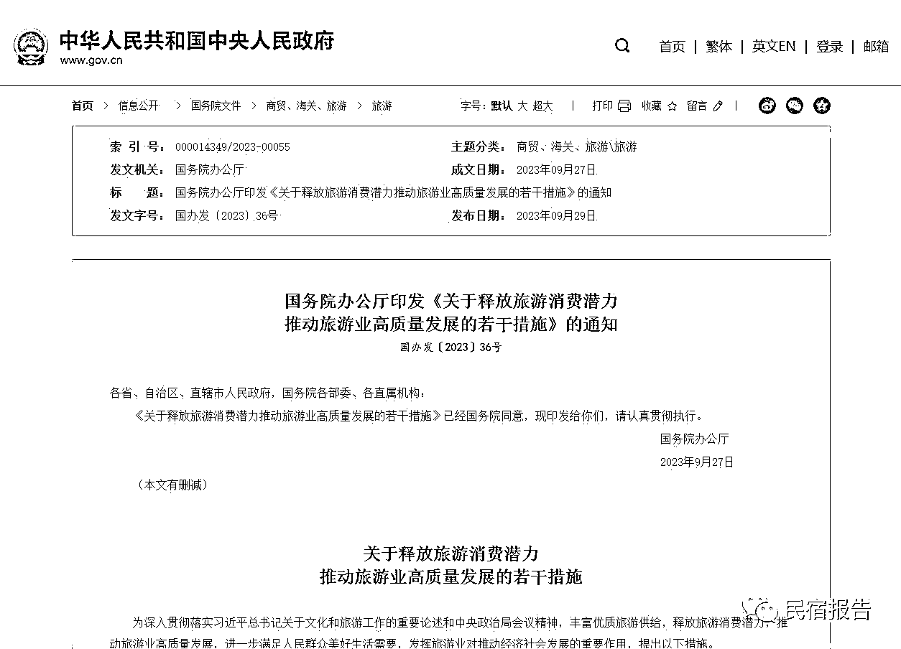
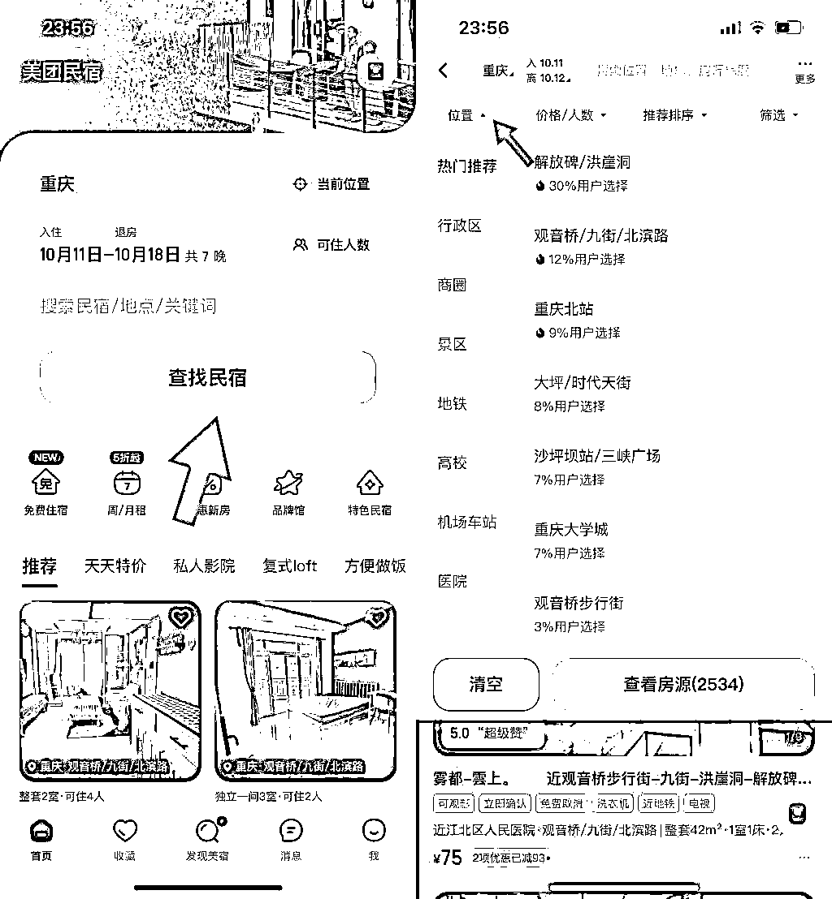
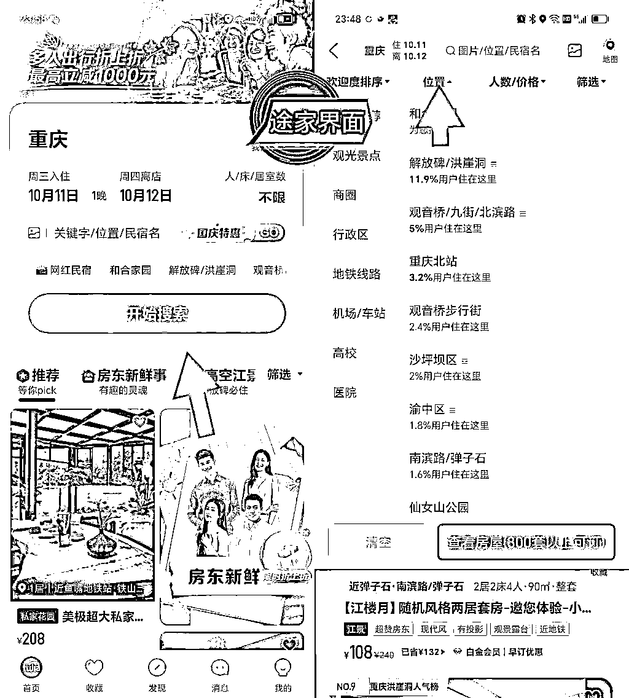
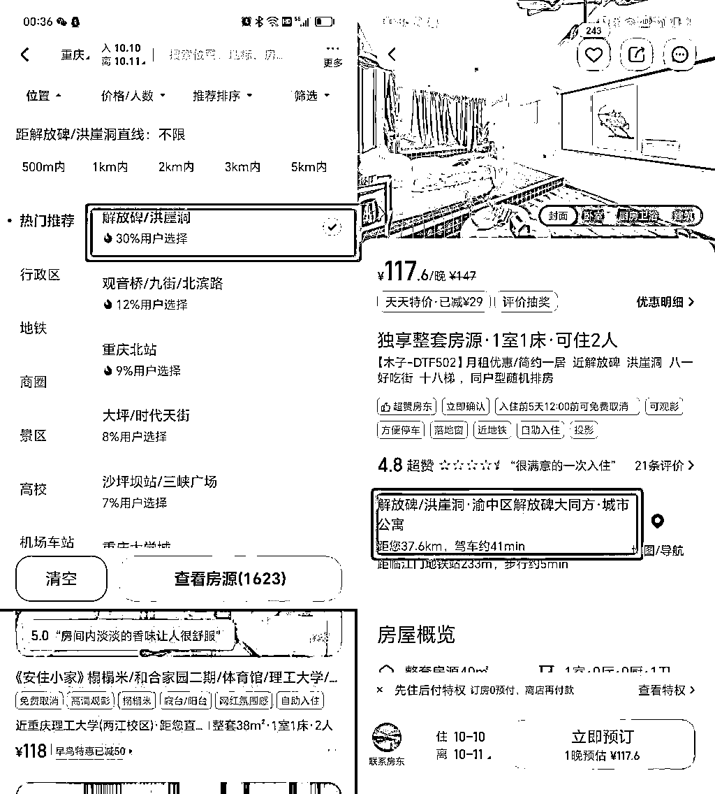
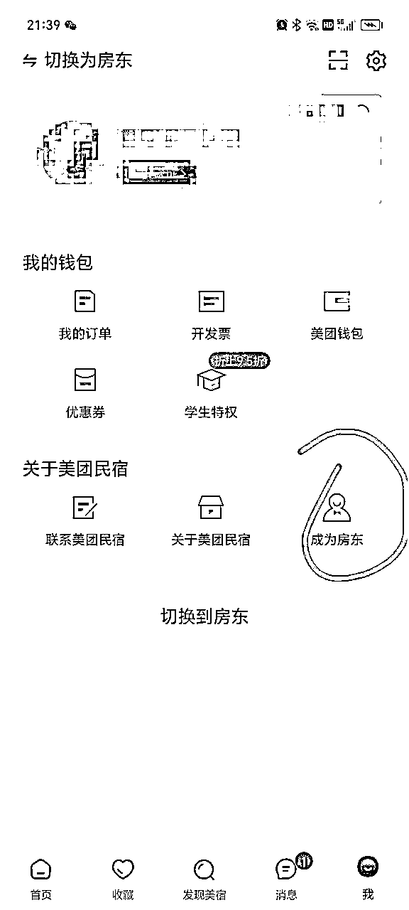
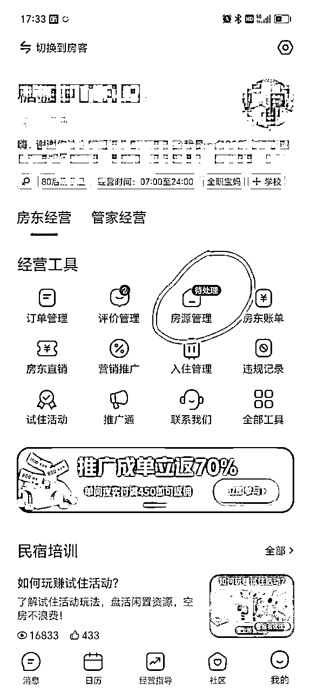
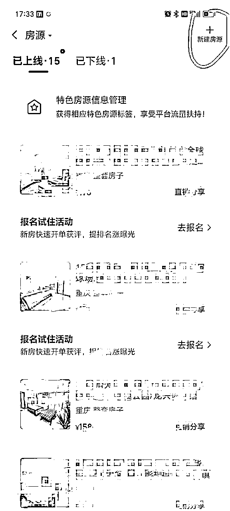
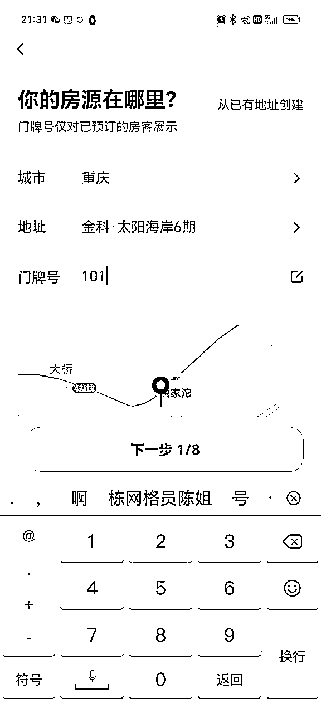
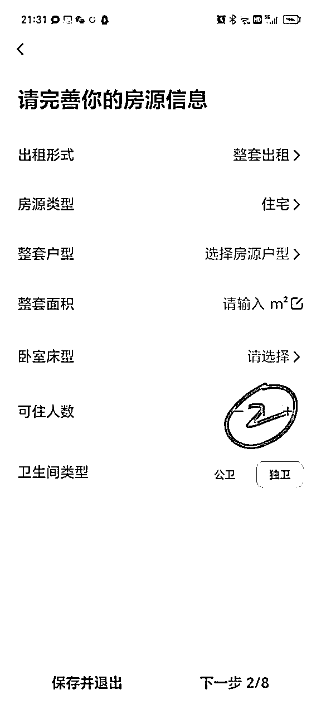
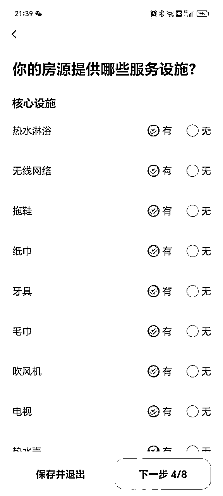

来源：https://fwsgkdbb3og.feishu.cn/docx/WIz8dl3g3o5V8GxvuU2cgmdunEh
上个月在生财发布了一篇我做民宿的经历分享，没想到收到一大批圈友的点赞及鼓励，50+圈友顺着网线加了我的微信，这些正反馈给了我莫大的鼓励。但是也有一些想做民宿的纯小白，看完分享后还是不知道怎么入手。那下面我就从第一步选址到运营再详细拆解一遍，希望看完的萌新小白们都能快速
上手。
先上图，了解下国家利好政策。看完这张图有没有增加一些信心呢？各地的具体政策，最好是去当地有关部门详细了解哦。

以我周边房源为例，我们这里是重庆郊区，一套一居租金在500左右，一般押金1000，季度付1500，拿房费用就是2500。我拿的房子是家具家电较全的，添置物品和配置软装，我每个房间还配置了电饭煲，炒锅，碗筷等，,一共大概2000，一间房一个月大概营业额在2500以上，4500/2500=1.8,不到两个月就回本了。有的合同有免租期1-2个月，那回本就更快啦。如果房租较高的区域，比如解放碑，观音桥，一居室租金大概2000左右，但是相对的客单价也会高很多，高进高出嘛。
大多数城市，20套以内是不需要办证的，具体城市可以查询当地的网约房管理办法。有杭州的圈友说目前低于20间房办不下来营业执照，公安局解释说因为亚运会暂时取消网约房证件办理，可能亚运会结束就会开放啦
1、自己家附近5公里内的区域
我就是在自己小区和隔壁小区拿房的，方便我管理，因为目前为止都是我自己管理+清洁。毕竟我的主业是带娃，赚钱只是副业，哈哈。如果是准备全职经营民宿，建议10套左右不要请保洁，自己清洁可以保证卫生，还有熟悉所有流程后，以后请人管理、清洁都不会被忽悠。先跑通0-1之后，再考虑去其他区域拿房，这样可以把风险降到最低。最近圈友南风送了我一本理财书【攻守】，里面有句话我印象深刻：活着，才有将来；不亏，才有复利。这句话在这里同样适用。如何快速收回成本就显得很重要啦。
调研你所在区域到底适不适合做民宿或者长租公寓，看看有没有这些参考物，商圈、工厂、写字楼、大学城、网红景点、大型医院、火车站、机场附近等。如果能占到1个，就能搞。要是能占到3以上，恭喜你，做民宿或长租公寓稳赚不亏。另外，有4种简单的方式也可以用。第一种，去你所在区域加20-50个中介微信，找他们了解这片区域的租房情况，所谓专业的事交给专业的人，是最快的方式；第二种，找物业客服打听，他们就像是小区的土地神，小区里的事情他们都门儿清；第三种，58同城，安居客等各大平台数据；第四种，参考同行，比如你所在区域有多少家酒店，美团途家上有多少民宿，这些是很好的参考数据。如此一圈了解下来，基本就知道能不能做了。
选几室的房子？我的房间基本上都是单身公寓，只有一套是两室的。因为我这是小情侣、出差人群比较多，单配会更有市场。如果是旅游打卡地就需要套房为主了，这个还得根据当地用户群体决定的。
2、热门商圈
如果资金充足，对商圈客群也比较了解，可以直接进入高阶模式。只要是热门商圈就不缺客人，缺的是优质产品与服务。商圈的拿房价相对较高，对启动资金不多的朋友来说就要谨慎了。但是高进高出，只要产品够好，不愁客源。筛选热门商圈的步骤如下：
第一步、如何选商圈
打开途家或者美团APP，选择城市，点击查找民宿，点击位置，就会出现热门推荐，排名就是你所选城市的热门商圈，热度从高到低。竞争越是激烈的商圈，说明需求量越大，有钱的直接上就行。


第二步、如何选楼盘
抄同行。举个栗子，点击排名第一的解放碑/洪崖洞，会显示很多房源，点开击前几个房源查看，每个房源的地图都会显示具 体的楼盘名称。这些个楼盘就是我们的目标楼盘啦，接下来就是在这些楼盘附近找几十个中介（越多越好），看够100套房，从中选出最优质的。

1、中介
小白最靠谱的签房方式就是中 介。找到你的目标楼盘，然后找多几个中介，告诉他们你是做民宿二房东的，需要大亮房源，可以长期合作，你可以在我身上赚至少两次佣金。第一次是我们拿房时，中介费该多少一分不少。第二次，可以给我介绍客人，我给你返点。第二次佣金，特别是做长租公寓的二房东，一定要多加中介，只要佣金到位，他们会很乐意给你介绍客人的。
2、怎么和房东谈
2.1经常遇到的问题就是：房东不愿意把房子租 给做民宿的。觉得人多不安全。我们可以告诉房东，我们是有在派出所备案的，而且我们每个客人都是会先登记身份信息再办理入住的，您大可放心哈。8月底我签了一套刚装修出来的精装房源，就是这么谈的。一开始我说是做民宿，房东姐姐一听，头摇的像拨浪鼓。她说已经好几个做民宿的打电话给她要租房，她都没有同意，不愿意租给民宿的。我很诚恳地和她讲事实摆证据，最后成功签下了。
2.2房东主要的诉求就有四个：1、稳定收租 2、避免空置 3、省去麻烦 4、爱护房子
抓住房东这几个心理，你可以这样和房东谈
1）姐姐/哥哥，您把房子委托给我来管理，我可以每个月或者每个季度按
时给你打租金，我们合同上白纸黑字注明打款日期，这5-10年您都可以稳定的收钱。 空下来的时间，您该玩玩，改上班上班，多好。
2）我们合同期是5-10年，这期间您都不用担心房间会空置，多省心呀
3）其他租客一般都是签一年，中途很可能因为工作或家庭原因而搬家退租，关键是还得麻烦您亲自带租客多次看房，还要给中介付多次中介费。空置的租金和中介费也是很大的一笔钱呢。委托我管理，这些问题您都不用操心啦。
4）房子交给我您可以特别放心，我们会比您自己更爱护您的房子，我们前期会给房子做一个全面的装修升级，把您的房子布置得漂漂亮亮，以后到期您要租要卖，价格上也能卖个高价。
3、签合同
这里注意了，和房东签的是房屋托管合同，就是房东委托我们来管理此房源，我们是有权对房源进行改造和再出租的，另外还要加上房东的委托协议。合同里一定要注意违约条款，房东如果违约，须赔偿我方的损失，尽量赔偿金额高一些，违约成本高了就可以避免房东随时违约了。因为有的房东总有些小心思。
在合同里加上：
甲方将该房屋及附属公共设施（门头、走道、内外墙等）委托给 乙方，以作为经营酒店式公寓等相关事宜使用，并完全同意乙方自主推广、经营、管理该房屋。 甲方同意在合同约定的委托期内，乙方有权对该房屋及附属公共 设施自主装饰、装修、使用、租赁、转租、维护等行为。
4、合同期限
签的时间越长越好。五年起步。也有的房东不愿意签这么久，只签1-2年，那是房东对我们的信任还不够，如果房源很优质的情况下，一年也能签，前提是房态已达到民宿出租标准，不需要我们再进行软装升级了。我8月底那套精装房，只签了3年。这套房配上密码锁，四件套，仿真绿植等，一共花了不到1000元，一个月不到就回本了。
5、租金和押金
能谈到押一付一最好，不行就押一付三，尽量减少前期的投入。这样回本周期更快，利于我们继续滚雪球拿下一套房。
在上一篇帖子里我强调过，新手小白建议拿精装或简装房，不要碰毛坯房不要碰毛胚不要碰毛胚。如果是自己的房源除外，前提是位置适合经营民宿，不然花了大量的精力，一个月也没两个单，还不如长租省时省力呢
收到精装和简装房，我们拿过来之后，只需要做一些软装的升级就可以了。民宿在各大平台卖的其实就是图片，跟相亲一样，长得漂亮长得帅的的最受青睐，当下社会就是颜值经济。所以这一步非常关键。
合理的的软装搭配，既要有高颜值又要足够省钱，可以去当地的二手市场，也可以进当地各种二手群去淘宝贝。还有线上渠道，拼多多、1688都是我常用的平台，经济实惠。
刚开始小白找啥设计师呀，软装其实很简单，去小红书，抖音，淘宝上搜家装图片，确定风格之后，照着图片上面装配就行，照葫芦画瓢，实操几次就能得心应手了。现在年轻人喜欢的风格无非就这几种：北欧风，轻奢风，原木风，奶油风。装配的时候注意不要太女性化，我之前就犯了这个毛病，按照女性视角来挑选，小女生喜欢的，单身男客就很不喜欢，所以尽量走中性风，男女老少通杀那种就对了。
软装里有一个很重要的配置，不贵但是非常关键，那就是氛围灯。1-200可以买一个很好的氛围灯，拍照片的时候特别出片，氛围感立马咔咔直线上升。
装饰画不要买那些花花草草什么的，选不好就容易显得土气，就选抽象型的，反正看不懂就对了，显高级，嘿哈哈哈。还有波西米亚风格的装饰品也是我常用的，比如挂毯，编织类装饰物等，价格便宜又有格调。
卧室窗帘一定要选全遮光的，因为现在年轻人都是夜猫子，属于“月亮不睡我不睡，太阳起了我不起”，一开始我就因为买的窗帘透光，然后有客人入住后要求我给他换遮光窗帘。没办法，我只能找了一个沙发盖巾去给他暂时遮上。然后紧急下单换了全遮光窗帘。这就是我踩过的其中一个坑。
四件套上一篇我说了尽量用白色，原因我也写了，这里不再赘述。另一个我总结的经验，就是涤纶的面料比纯棉的更好洗，污渍搓一搓就干净了，并且更容易晾干。特别是南方的秋冬季，烘干机快24小时工作了，特费电。
奉上“民宿必备清单”，照着抄作业就行
建议买通通锁系列，我对比使用后觉得这个小程序比较好用哈，生成的限时密码较短。拼夕夕，淘宝上搜通通锁，100多-1000多的都有。之前我买的密码锁就不好用，生成的限时密码12位，经常有客人抱怨太长，还没输入完就提示开锁失败。有一次客人急着上厕所，反复多次打不开锁，憋得不行，我只能把常用密码发给她了。非常影响入住体验。
我用的宾馆专用纯白色的，可以用84漂白并消毒，如果是其他颜色四件套就要买单独的消毒用品了。专业的布草公司
有条件的可以请专业摄影师来拍，一套房大概300左右，出来的效果肯定是更加高大上的。也可以自己拍，全景，中景，近景，特写，多角度拍摄，然后用修图软件调一下色就好啦。我的所有房源都是我自己手机拍照修图，然后上传的。
视频最好也拍了上传，客人在平台上看更直观，平台也会给流量扶持，提高下单的几率
目前市面上主流的民宿太就是美团，携程，途家，另外还有飞猪，小猪，木鸟等，我主要用的前三个，后面这些平台也可以上，，反正用宝寓等工具可以一键管理房源，开始新手房东多上一个平台就多一分机会
各平台优劣势。美团的客户偏年轻化，经济能力相对较弱，大学生和小年轻为主。携程的和途家的客户以出差商务人士为主，优点是消费能力较高，但是要求也相对较高。有的年龄偏大的客人，有些线上的操作搞不明白，比如导航路线看不懂，比如密码锁投影仪不会用，等等，需要房东耐心服务。
美团和途家对房间数量没有什么要求，一个房源都能上，有房产证或者租房合同就成，房源位置也可根据实际位置上传，很灵活。
携程要求就要高一些了，需要租房合同或者营业执照，并且要求是同地点5间房源以上，因为携程主打酒店，所有房源只能有一个地址。但是携程毕竟算头部了，流量还是很大的。
携程有一点不太友好，就是很多客人习惯了酒店宾馆的标准化，下完单发现是小区民宿，害怕清洁不到位，很容易取消订单。而美团和途家的客人心理预期没这么高，就很少有这种情况发生。
一开始我的订单70%来自美团，现在30-40%来自携程，40%来自回头客，剩下的来自美团和途家。
下面以美团民宿为例，上传房源信息的步骤：
1.下载“美团民宿”APP
2.选择“成为房东”

3.我的-房源管理

4.新建房源

5.按步骤添加房源地址等信息



6.上传多角度房源图片，卧室、厨房、卫生间等
7.发布房源
8.等待审核通过后就可以设置新房特惠等优惠活动啦
新房源如何获取平台流量
新房源尽量多参加平台活动，比如新房特惠、今夜特价、早鸟优惠等，因为每一个活动就是一个流量入口，新房源在没有订单数据时，最好的方式就是参加活动获取流量推荐。先把数据做起来了，排名靠前了，客人更容易搜索到，曝光量上来，平台自然会给流量。
价格如何设置
参考同一区域的同行价格，像五一、十一黄金周可以多关注同行订房情况，如果节假日同行的房源预定光了，那恭喜你赚钱机会来了，立刻调高价格了，节假日房间是不愁卖的。
房客接待流程？
来订单后一定主动联系客人，加微信，让他提供身份证正面照和联系方式，就说是派出所要求的实名登记，都会配合的。实在不配合发照片的，可以用平台的入住管理登记，或者亲自上门登记。这是为了保护我们自身权益，一旦出现问题，派出所查起来，能拿得出入住记录。加客人微信还有个好处就是给私域导流，以后还可以考虑多元化变现。
加了微信发房间定位和入住密码给客人，并附上入住注意事项。比如退房时间，退房时关门关空调等。
多平台如何一键管理？
我目前用的是宝寓，微信小程序上面搜索“宝寓”，注册登录，可以把所有平台绑定上去，后面一个平台有订单，宝寓会自动关闭其他平台上的房源，不用手动一个平台一个平台地关房，避免造成超售房源，容易受到平台罚款。市面上还有很多，比如百居易，哪个用得顺手用哪个，大同小异吧
平台定价可以参考同行，上美团、途家搜周边的民宿就行。总之一点就是，不要打价格战，可以拼服务，我就是靠真诚服务留住了一大批老顾客。刚开始我只拿了3间单间，先练练手，全部是大床房，因为大多是小情侣。后来慢慢有出差的顾客，去年问标间的客人多了，我新租的房源就做了双床，满足住客多种需求。两室的平时生意较差，寒暑假还可以，如果是旅游景点附近，就建议多拿两室三室的套房，因为假期旅游一般都是多人出行。从最开始月入1000左右，到现在月入2W+，我用了年半。一路摸爬滚打，从不会到熟练，这需要时间去实践，我相信只要踏实用心，就会越来越好的。
我们房源主要是在各大平台上销售的，所以平台上的数据就非常重要了。不管是线上来的客人，还是我们线下客人，建议通通走平台。好处是可以提高我们的平台销量，并且如果发生纠纷，还可以通过平台来解决。
上次我朋友就是线下接了一个单，住了两天，还有一天房费没给，并且把房间里的很多东西都损坏了，衣柜里备用的四件套也惨遭毒手。多次交涉赔偿无果后只得报警，警察叔叔帮忙才追回了部分损失。如果当时走的是平台，就没有这么麻烦了，因为平台赠送有保险，直接申请赔偿就行。平台上架都是免费的，成交后才有10%的服务费。
所以，不要为了节省那1%-3%的平台费而线下交易，记住我们和平台是互惠互利的关系。线下客人可以引导到平台下单，用房东直销就可以啦，美团房东直销现在只扣1%，以前是3%；途家直销扣3%。
新房源多参加平台活动，一个活动就是一个流量入口。刚开始没有单可以找亲朋好友刷单，过两天再五星好评。客人退房时也加上一句：如果住得还算满意请给我一个五星好评呀，您的好评对我十分重要，感谢您的支持，欢迎再次入住，笑脸。
1.客人下单之后，记得添加微信
这一步是为了方便发送入住指引和入住密码，访客有什么问题也好第一时间联系到你解决。最重要一点是让客人线下交押金和提供身份证正面照登记入住，线上已经交过押金了，就可以跳过押金这一步骤。
不过，我建议线下收取押金。因为一旦发生纠纷，像美团很容易听信客人的一面之词而偏袒对方，那你的损失可能得不到全部赔偿。重庆群里有房东就遇到过这样的事情。我做这么久很少扣客人押金。有的客人打碎一个碗啊杯子啊，床单弄脏了什么的，我都没有扣过押金。
比如有的女性顾客碰到例假来了，床单上不小心有了血渍，有的房东就会扣客人的押金作为清洁费，我从来没有因为这种情况扣过客人的押金。其实血渍是很好清洗的，洗干净也不影响下次使用。如果我们这次为了这二三十块钱的清洁费扣了客人的押金，很可能下次他不会再来了。我这个地方做的主要是回头客的生意，不是一锤子买卖，真诚的服务才能换来客人的转介绍和复购率。
2.服务细节化
我民宿的入住时间最早是下午15：00，有的设置的14：00，这个根据清洁速度来定。退房时间是中午的12点。那有的客人，他可能会要求提前入住，或者是延后退房。客人提前两三个小时到了要入住，如果有空房间的情况下，我会安排入住，如果没有的话，我也会如实告知，让客人自己选择是等待还是换另一家。延后退房要看时间，如果延后一两个小时，我是不收费的，前提是这个房间当天没有订单，如果有订单，我会提前跟客人讲，最迟什么时间退房，一般客人都会理解。
我看民宿群里，很多房东就说提前入住或是延时都要收费，因为会有额外的成本支出，比如电费，水费。上次有一个房东就为了象征性的收十块钱提前入住的费用，跟客人闹得很不愉快，我个人觉得没有必要吧。做生意虽然成本控制很重要，但是做一个有人情味有温度的老板更重要。
民宿的日常事务是非常琐碎的，如果没有耐心，脾气暴躁易怒，请务必考虑清楚再上手。因为你会发现做了这一行后，会遇到各种各样的客人，分分钟能把人气死的节奏，心理不够强大的朋友不建议入行，哈哈
举几个例子
1.入住几个小时后居然理直气壮来要求退全款，就是想白嫖。
2.要返费的，威胁房东：我给你好评你给我返现房费的50-60%，不然差评伺候，180的房费，居然让返100，这是有多无耻？刷新三观了没？
3.故意损毁房间设施还拒不赔偿的
4.我还遇到凌晨非让我代买“小雨衣”的，给我整得尴尬死，
还有很多小故障需要房东去解决的，反正民宿房东日常就是消防员，哪里需要哪里抢险。小白入场得做好心理准备。虽然城市民宿是很适合小白的低投入创业项目，但是没有耐心的人真心不建议做。
以上就是我的分享啦，如果看了觉得有帮助，点赞收藏鼓励一下呀，哈哈，上次发帖后也有不少圈友前来链接我，找我约课，最近也有在认真梳理，已经着手在准备一对一陪跑，民宿日租+长租短租公寓从0-1起步，除了美团等OTA平台运营以外，还会陪跑抖音，小红书，视频号等社交媒体平台获取精准流量。欢迎各位朋友一起探讨。